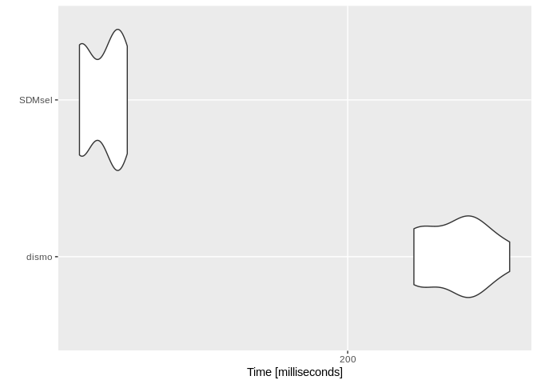

SDMsel (Species Distribution Model selection) provides a framework that facilitates users in preparing data for analysis, train and evaluate models. It also implements functions for data driven variable selection and model tuning and includes some utilities to display results (at the moment it implements MaxEnt and Maxnet models). SDMsel uses its own script to predict MaxEnt models that results to be much faster for large datasets than native prediction made using Java software. This reduce considerably the computation time when tuninig the model using the AICc.
Installation
You can get the latest stable version from CRAN:
install.packages("SDMsel")or latest development version from github:
devtools::install_github("sgvignali/SDMsel")Example
Load required packages:
library(SDMsel)
#> Loading required package: ggplot2
#> ________________________________________
#> | ____ ____ __ __ _ |
#> | / ___| | _ \ | \/ | ___ ___ | | |
#> | \___ \ | | | || |\/| |/ __| / _ \| | |
#> | ___) || |_| || | | |\__ \| __/| | |
#> | |____/ |____/ |_| |_||___/ \___||_| |
#> |________________________________________|
#>
library(dismo)
#> Loading required package: raster
#> Loading required package: spObtain data for analysis, we use the dataset provided by dismopackage:
files <- list.files(path = paste(system.file(package = "dismo"), "/ex", sep = ""), pattern = "grd", full.names = T)
predictors <- stack(files)
file <- paste(system.file(package = "dismo"), "/ex/bradypus.csv", sep = "")
bradypus <- read.table(file, header = TRUE, sep = ",")
train_coords <- bradypus[, 2:3]
set.seed(25)
bg_coords <- randomPoints(predictors, 5000) # Extract random pointsPrepare the data for the analisys with SDMsel:
train <- prepareSWD(species = "Bradipus variagatus", coords = train_coords, env = predictors, categoricals = "biome")
#> Extracting environmental condition for Bradipus variagatus...
bg <- prepareSWD(species = "Bradipus variagatus", coords = bg_coords, env = predictors, categoricals = "biome")
#> Extracting environmental condition for Bradipus variagatus...
#> Warning: 5 locations are NA for some environmental variables, they will be discard!Train a MaxEnt model:
maxent_model <- train(method = "Maxent", presence = train, bg = bg, rm = 1, fc = "lqph")
#> Loading required namespace: rJavaTrain a Maxnet model:
maxnet_model <- train(method = "Maxnet", presence = train, bg = bg, rm = 1, fc = "lqph")Plot ROC curve:
plotROC(maxent_model)
plotROC(maxnet_model)
Make prediction:
maxent_pred <- predict(maxent_model, data = predictors, type = "cloglog")maxnet_pred <- predict(maxnet_model, data = predictors, type = "cloglog")Plot prediction:
plotPred(maxent_pred, lt = "cloglog output")
plotPred(maxnet_pred, lt = "cloglog output")
Speed test
We test now the difference in speed between the predict function of dismo package that uses the Java software and the predict function of SDMsel package. We also test if the results are equivalent.
The following code creates a function to test the equivalence of the results:
my_check <- function(values) {
error <- 1e-7
max_error <- max(values(values[[1]]) - values(values[[2]]), na.rm = T)
max_error < error
}If the results are different for more than 1e-7 the test will fail. The next function converts an object of class Maxent into an object of class MaxEnt (dismo pkg):
me_model <- SDMmodel2MaxEnt(maxent_model)Run the test with 10 replicates:
library(microbenchmark)
res <- microbenchmark("dismo" = pred <- {predict(me_model, predictors)},
"SDMsel" = pred <- {predict(maxent_model, predictors, type = "cloglog")},
times = 10,
check = my_check)Print results:
res
#> Unit: milliseconds
#> expr min lq mean median uq max neval
#> dismo 751.2590 756.6702 773.5538 776.8779 786.3941 794.7686 10
#> SDMsel 263.7109 266.9099 269.8791 268.6959 273.3701 280.3493 10Plot results:
autoplot(res)
#> Coordinate system already present. Adding new coordinate system, which will replace the existing one.
SDMsel is at almost three times faster than native Java software and the speed improves much more for large datasets when using parallel computation (i.e. see details in predict function).